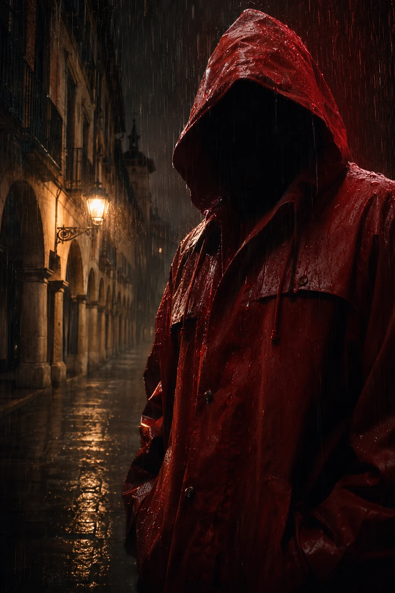

Artículo 12 · Declaración Universal de los Derechos Humanos
El Cartógrafo
ya sabe por dónde vas.
23:17. Calle Mayor. Una foto, una hora y una rutina bastan para empezar a seguir un rastro. Cada decisión cambia lo que ocurre después.
Ficción con escenas recreadas · Música y efectos al entrar · Sin datos guardados

CALLE MAYOR · 23:17
La foto ya está en tu perfil.
Toca los puntos para explorar.
Una story pública deja ver los soportales. El Cartógrafo reúne detalles que cualquiera puede ver; no necesita entrar en tu teléfono.
La vas a subir. ¿Qué haces con la ubicación?
Ficción. Sin acceso a tus datos.
EL FINAL DE TU RECORRIDO
El rastro
termina aquí.
Ficción en Alcalá. Publicar no convierte una invasión de intimidad en culpa de quien la sufre.
ARTÍCULO 12 · DECLARACIÓN UNIVERSAL DE LOS DERECHOS HUMANOS
Tu vida privada merece protección.
Nadie puede meterse arbitrariamente en tu domicilio, mensajes o vida privada. Este derecho hace posible vivir y expresarse con libertad, también en internet.
Ver consejos breves y el texto oficial
Cuida tus datos sin dejar de vivir.
- Quita la ubicación y publica cuando ya te hayas ido.
- Revisa quién ve tus publicaciones y qué revelan el fondo y los horarios.
- Usa contraseñas distintas y verificación en dos pasos.
- Ante una amenaza: guarda pruebas, bloquea, reporta y avisa a alguien de confianza. En una emergencia en España, llama al 112.
Estas medidas ayudan; la responsabilidad de respetar el derecho es de quien no debe invadirlo.
Guías de privacidad de la AEPD ↗Escenarios ficticios inspirados en lugares reales: Casa Natal de Cervantes, Calle Mayor 48 · Puerta de Madrid y recinto amurallado.
«Nadie será objeto de injerencias arbitrarias en su vida privada, su familia, su domicilio o su correspondencia, ni de ataques a su honra o a su reputación. Toda persona tiene derecho a la protección de la ley contra tales injerencias o ataques.»Texto de la Declaración Universal de los Derechos Humanos en la ONU ↗
Proyecto realizado por Jeisson Osorio Mesa, estudiante del Máster Universitario en Protección Internacional de los Derechos Humanos, Universidad de Alcalá.